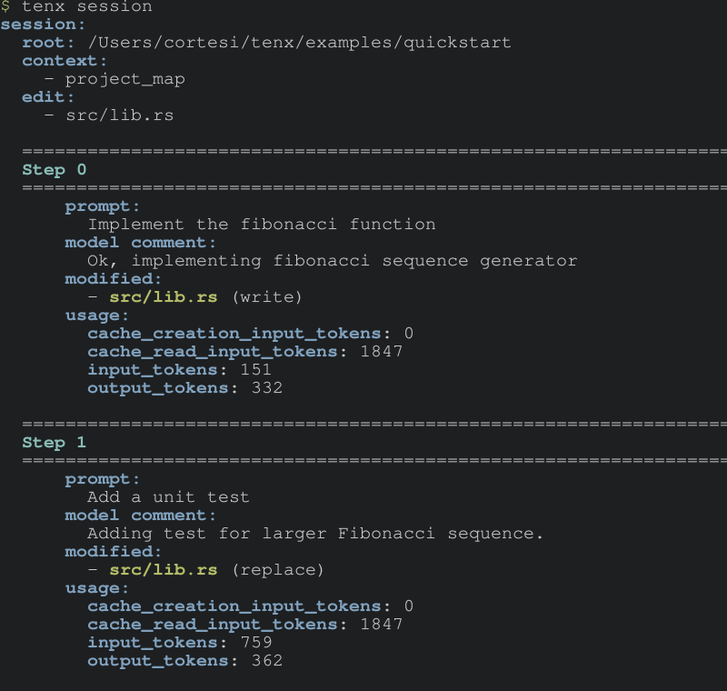

The Session
All model interactions happen within the context of a session. A session represents a single coherent conversation, which would typically result in one commit. A session consists of the following:
- The set of files we're currently editing. This is a subset of all the files included in the project.
- The non-editable context that we're providing to the model.
- A list of steps, each of which is a request to the model and a response, along with any associated information like the patch parsed from the model response.
- Information needed to undo any step.
There are a few ways to create a session - explicitly with tenx new, which
creates a new empty session, and implicitly with commands like tenx quick and
tenx fix, both of which take a list of file globs, create a session with
those files. Consult the help for each command for more information.
You can also view the current session with the tenx session command:

The example above introduces another crucial concept - contexts. Tenx has added a project map as context to the session. Read more about contexts in the context section.
Working with sessions
The canonical reference for working with sessions is the help output of the
tenx command-line tool. However, here are a few things to explore:
- Managing session context is a key part of tenx, and is covered in the context section.
tenx edit: Add editable files to the context.tenx retry: Retry a model interaction, rolling back any changes already made. You can use retry to re-start the session at any step, and even switch models mid-session if your current model is not producing the results you need. You can also modify the prompt for a step with the--editflag.tenx reset: Reset a session to a specified step, rolling back all changes up to that step.tenx code: Continue the current session, with a new user prompt. The model will receive the full context of the session up to date.tenx clear: Clear all steps from a session, without resetting changes. Handy if you've set up context that you want to keep, but want to start a new conversation.